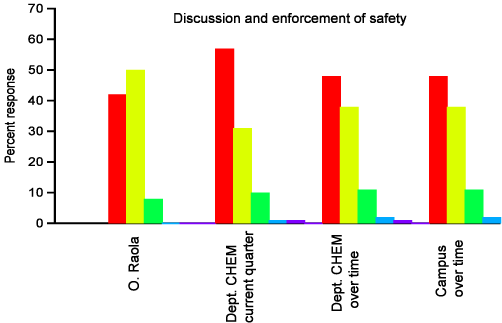

Safety is a major concern in a Chemistry lab and I am considered to be very strict regarding the observation of safety rules. Some students consider this emphasis some kind of nuisance, but I never get tired of repeating: "Safety first". A specific topic that requires extreme attention is having them wear their goggles every time there is a hazard for their eyes. But again, I guess it is much better for them to feel overprotected by the TA rather than suffering any kind of eye injury in the lab.